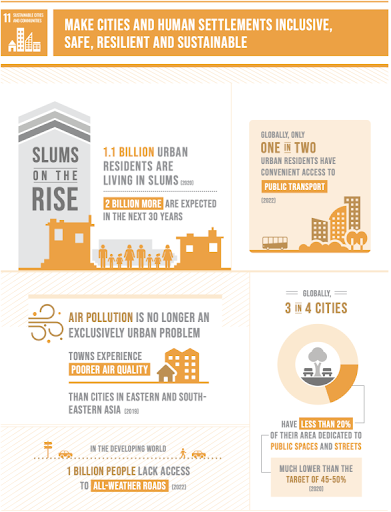

ODS 11: Ciudades y comunidades sostenibles.
Cuál es el objetivo principal de este ODS según la ONu
El objetivo principal de este ODS es, según la ONU: “Hacer que las ciudades y los asentamientos humanos sean inclusivos, seguros, resilientes y sostenibles”. Con ello se busca garantizar acceso de todos a servicios básicos, promover la urbanización inclusiva y sostenible y proporcionar sistemas de transporte seguros, habilitando medios de implementación para conseguirlo.
Qué relación tiene con la tecnologíaa o la informática.
Las TIC nos permiten recoger, analizar y usar datos urbanos para tomar decisiones más eficientes en transporte, energía y servicios públicos. En el ámbito de la informática, se puede relacionar directamente con el desarrollo de software, base de datos, análisis de datos, plataformas de participación, visualización y monitorización, etc. Además, la tecnología ayuda a que la ciudad sea más accesible para todos, ya sea con apps, sensores inteligentes, sistemas de transporte adaptados, …
Qué problemas o retos ambientales/sociales afectan al logro de este objetivo.
-
Muchas ciudades crecen rápidamente y sin suficiente planificación, generando, en ocasiones, barrios marginales que se dejan de lado, descuidando las infraestructuras y servicios básicos.
-
Exceso de transporte privado, lo que genera congestión de tráfico en las carreteras de las ciudades y aumenta las emisiones, contaminando más aún el aire.
-
Mala gestión energética y de residuos, aumentando los costes de mantenimiento y suministros, y empeorando la flexibilidad ante agentes externos como la degradación ambiental o desastres naturales.
Cómo influye la actividad tecnológica en esos problemas.
-
De forma positiva, la tecnología nos permite monitorizar y optimizar los recursos en las ciudades. Con el uso de plataformas de análisis de datos urbanos se facilita el mantenimiento predictivo, ahorrando costes a la vez que mejorando los servicios. Además, aplicaciones móviles y sistemas de participación ciudadana pueden permitir a los habitantes informar sobre posibles problemas sociales, mejorando la gobernanza urbana.
-
De forma negativa, el consumo energético puede ser un cuello de botella, si no se diseña bien los sistemas necesarios. Además, es posible que se creen brechas digitales, aislando a los ciudadanos menos familiarizados con la tecnología de todos estos sistemas.
Qué soluciones tecnológicas podrían aplicarse para mitigarlos o resolverlos.
| Problema | Impacto | Solución tecnológica |
|---|---|---|
| Urbanización acelerada y crecimiento desordenado | Falta de servicios básicos, infraestructura y mantenimiento | La creación de plataformas de planificación urbana digital, sensores inteligentes, aplicaciones móviles de participación ciudadana, … |
| Movilidad urbana poco sostenible | Emisiones elevadas, mayor pérdida de tiempo, empeora la salud pública | Sistemas de transporte inteligentes (semáforos, aparcamientos, etc.), análisis de big data para rutas óptimas |
| Servicios urbanos, residuos y consumo de recursos ineficientes | Alto consumo energético, residuos mal gestionados, vulnerabilidad ante desastres | Gestionar de forma inteligente los residuos, usando sensores y redes de energía inteligentes, además de hacer una monitorización ambiental en tiempo real |
Qué ejemplos o casos reales conocemos.
-
En Barcelona se han desplegado IoT para movilidad, residuos, energía, etc. Se considera una “ciudad inteligente” (smart city).
-
Otro ejemplo en España es el Parque Tecnológico de Rodes en Alcoy (Alicante), con la empresa Telefónica, que está desplegando nodos IoT para hacer gestiones energéticas, de movilidad y de seguridad urbana.
Qué indicadores o métricas podrían usarse para medir el progreso hacia este ODS.
Algunos de los indicadores oficiales de la ONU referentes a este ODS son:
-
Indicador 11.1.1: Proporción de la población urbana que vive en barrios marginales, asentamientos informales o vivienda inadecuada.
-
Indicador 11.2.1: Proporción de la población que tiene acceso conveniente al transporte público, por sexo, edad y personas con discapacidad.
-
Indicador 11.3.1: Relación entre las tasas de consumo de suelo urbano y tasa de crecimiento de población.
-
Indicador 11.7.1: Promedio de la proporción de superficie construida de las ciudades dedicada a espacio abierto público para todos, por sexo, edad, discapacidad.

Otros ODS relacionados:
-
Relación con el ODS 4 "Educación de Calidad"EnlaceODS4: El desarrollo urbanístico y tecnológico en el entorno social está estrechamente relacionado con cómo se educa a los ciudadanos y la calidad del conocimiento de las jóvenes promesas del país.
-
Relación con el ODS 8 "Trabajo decente y crecimiento económico"EnlaceODS8:
El desarrollo de tecnologías sostenibles y revolucionarias con el tiempo consigue crear trabajos innovadores con condiciones novedosas, haciendo crecer la economía local a nivel urbano, y estatal a nivel de país.
-
Relación con el ODS 3 "Salud y Bienestar"EnlaceODS3: El desarrollo y las mejoras en ciudades y comunidades lleva a un aumento directo del bienestar local de sus residentes. El avance en tecnologías de las ciudades aumenta la calidad de la atención médica por parte de los profesionales.